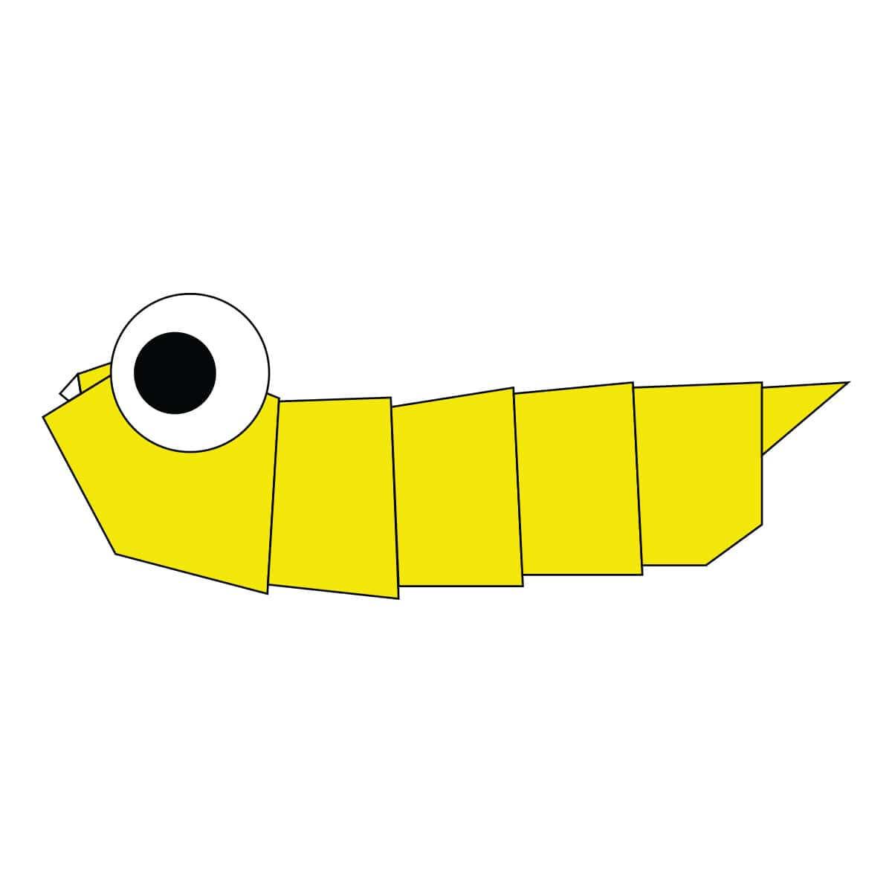
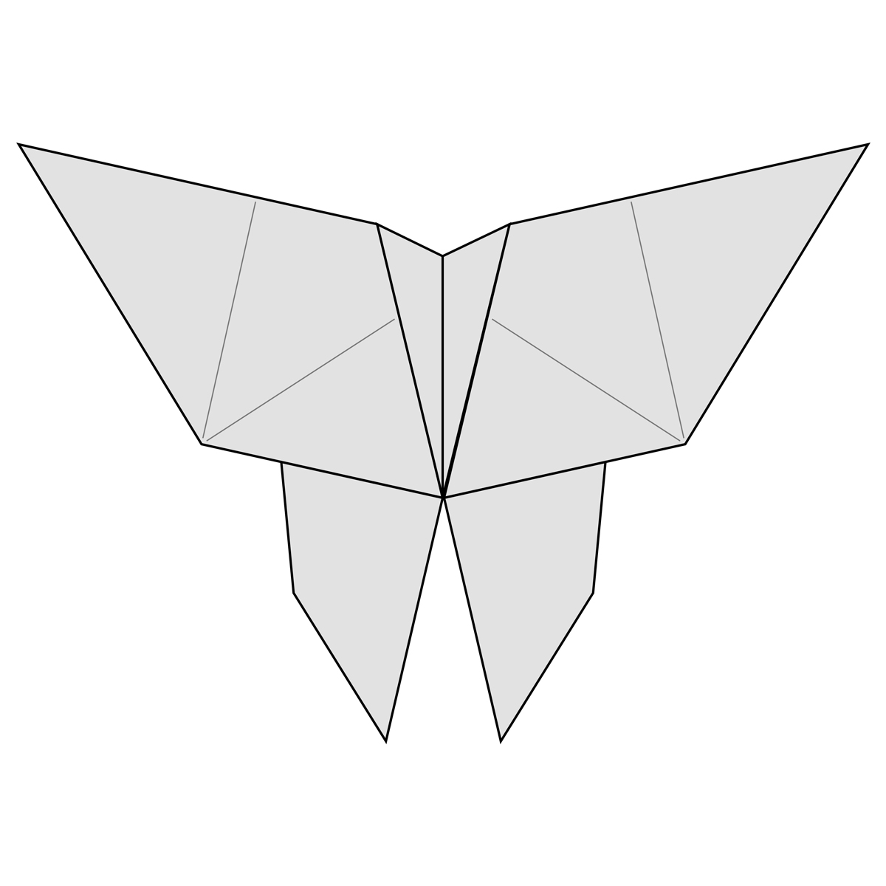

Origami Designs
About Us
Follow Us

Interesting facts about Caterpillars
- A caterpillar can have about 4,000 muscles in its body
- Caterpillars have 12 eyes
- A caterpillar only have 6 actual legs, while all the others are fake legs

Interesting facts about Pigeons
- Pigeons are actually highly intelligint animals
- Pigeons have excellent navigation skils
- Pigeons are really good multitaskers

Interesting facts about Cicadas
- After 13 or 17 years, a huge mass of cicadas come up in eastern United States
- Cicadas have 5 eyes
- Cicadas don't sting or bite

Interesting facts about Sharks
- Sharks have survived 5 mass extinction
- The Whale Shark has the thickest skin on any fish, and is as thick as 9 inches in some places
- For every human killed by a shark, humans kill 25,000,000 sharks

Interesting facts about Butterflies
- Butterflies can taste with their feet
- The Monarch Butterfly is the only insect that travels 2,500 miles on average every Winter
- A group of butterflies is known as a flutter

Interesting facts about Cranes
- Cranes are monogamous, meaning that they mate for life
- The chicks of some crane species sleep while standing
- Some cranes can fly over the Himalayas